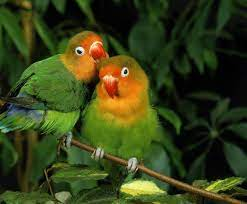

Yellow Wabler

The yellow warbler is a small bird with 35 subspecies, known for its yellow
and greenish-golden plumage. They inhabit or moist lands with small trees,
mangrove swamps, and dense woody growth.
Lovebird
Lovebirds are intelligent and affectionate birds.They are best kept as pairs, since
they require so much attention and affection. The lovebird is a
small stocky parrot between 5.1-6.7 inches (13-17 cm).